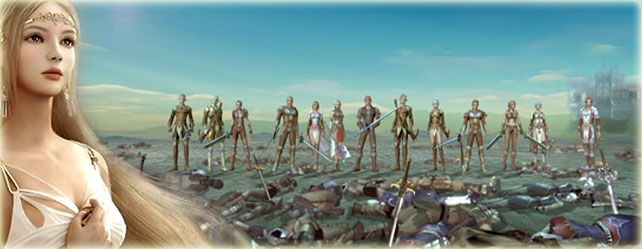

Shaiya es un impactante y sensacional juego MMORPG de fantasía que se puede jugar de manera gratuita y que
sumerge a los jugadores en una guerra masiva entre las fuerzas de la Luz y de la Oscuridad. Shaiya permite
que los jugadores busquen la gloria jugando solos o en forma colaborativa, muchos de ellos eligiendo formar
poderosos gremios, capaces de atacar y vencer hasta los más grandes y feroces monstruos de Teos. Mientras
los jugadores superan los retos, ellos son recompensados con nuevas armas y armaduras, que establece sus
habilidades y destrezas para convertirse en poderes dominantes de Shaiya.
Características del Juego

Invasiones, Jefes y Peligro
Enfréntate a increíbles e imponentes jefes de invasión los cuales alcanzan una altura tan enorme como los
mismos rascacielos. Encontrarás más de 15 dungeons para que te enfrentes a dragones, demonios, súcubos y
más. Agrúpate con algunos amigos o forma una invasión con varios jugadores al mismo tiempo.
Combate Competitivo de Jugador vs. Jugador (PvP)
Derrota a otros jugadores para subir de rango y avanzar en la jerarquía de la facción. Obtén títulos
prestigiosos, bonificaciones de stats y beneficios adicionales que impacten a toda tu facción.
Bendición de la Diosa
Únete a la asombrosa y masiva lucha para controlar el continente y competir por la Bendición de la Diosa;
un buff de amplia-facción que afecta a todos los miembros de tu facción, ¡aun cuando no participes en PvP!
Modos de Dificultad
Escoge tu propio nivel de dificultad. Cuanto más traicionero sea el camino que escojas, más grandes serán
las recompensas a encontrar. El Modo Máximo proporciona la experiencia tope, ya que la muerte se te
aparecerá en un perpetuo acecho.
Sistema de Gremios
Crea un gremio. Únete a un gremio. Búrlate de otros gremios. La vida es grandiosa cuando se tiene amigos
con quien disfrutarla y compartirla. Participa en reuniones informales, enfréntate a fantásticos enemigos o
ayuda a que el gremio establezca su nombre en las batallas por el posicionamiento del mismo. Obtén una casa
gremial en donde establecer tu gremio y adaptar tu experiencia.
Monturas para Jugadores
Los héroes famosos no caminan; sino que montan con estilo. Escoge entre numerosas monturas, incluyendo
gigantes basiliscos, misteriosos unicornios, ilustres sementales, sigilosos tigres e incluso dragones
bicefálicos. Las mejores monturas ofrecen asientos adicionales.